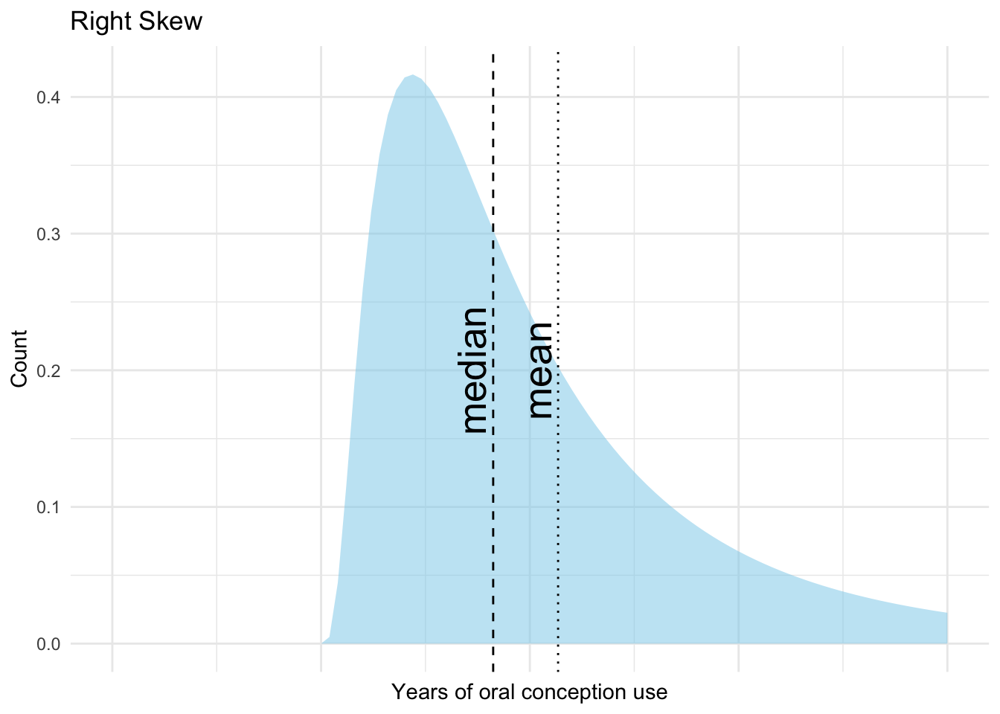
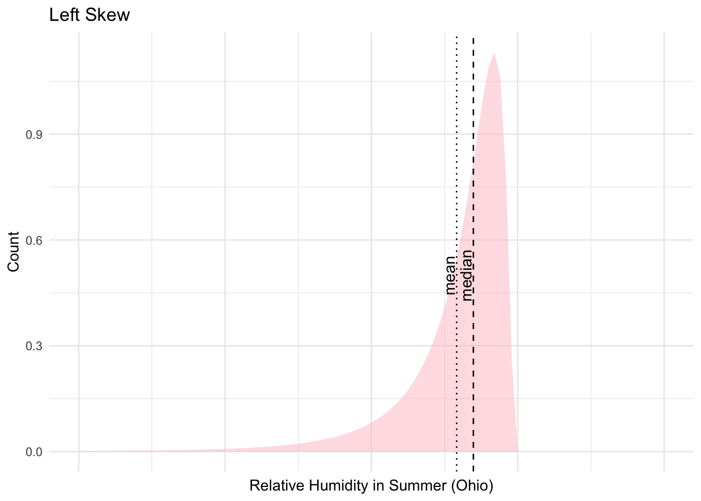
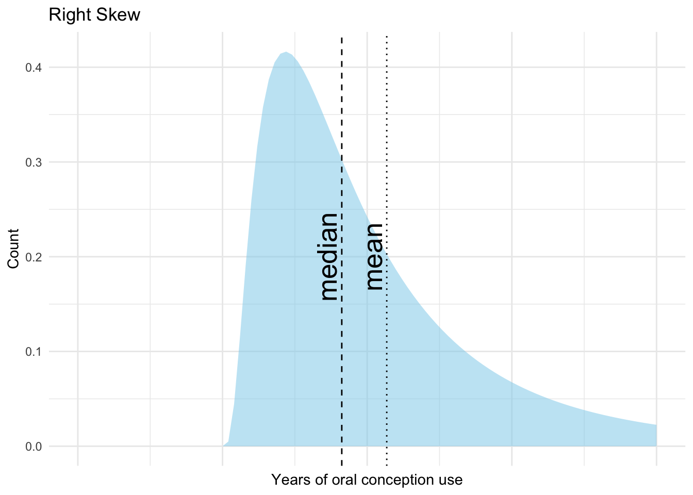
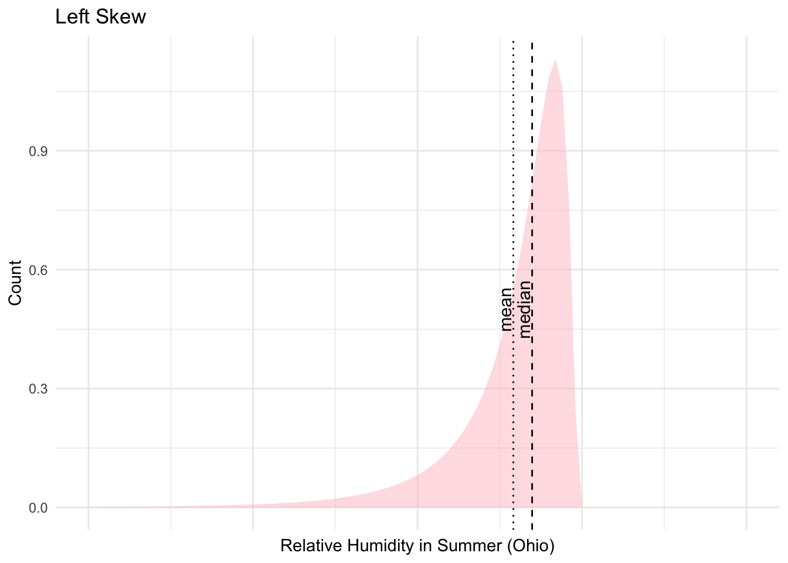
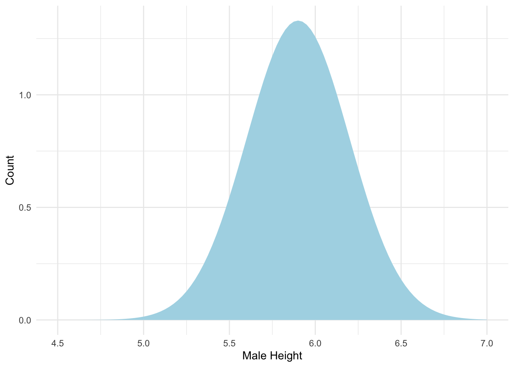
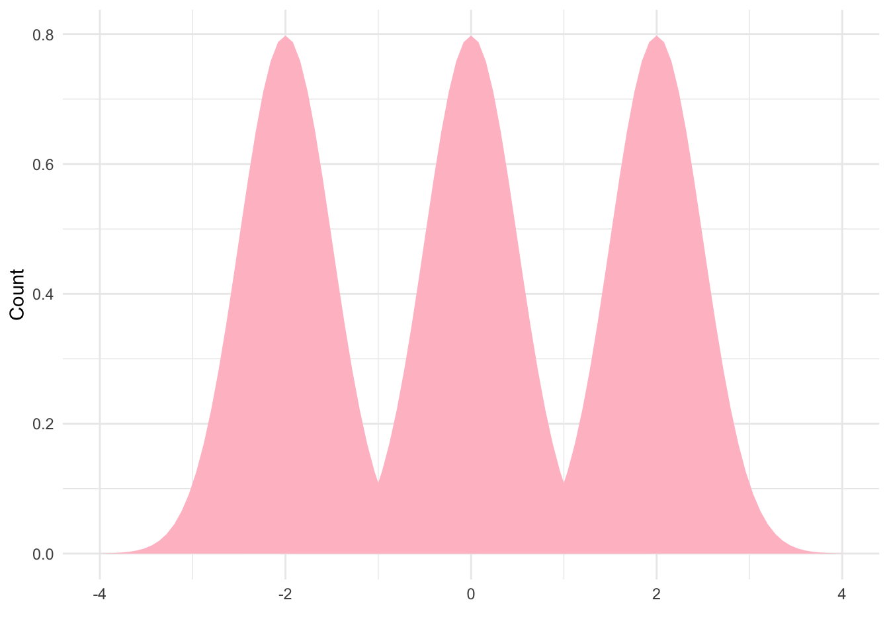

David Gerard
June 27, 2025
Observe \(X_1, X_2, \dots, X_n\)
Example: \(X_i =\) Birthweight for baby \(i\)
Measure of location = center of a sample (statistic) or a population (parameter)
Arithmetic Mean \[ \bar{X} = \frac{1}{n} \sum_{i=1}^n X_i = \frac{1}{n} (X_1 + X_2 + \dots + X_n) \]
Example: \(X_1 = 2\), \(X_2 = 5\), \(X_3 = -4\) \[ \sum_{i=1}^3 X_i = X_1 + X_2 + X_3 = 2 + 5 + (-4) \]
\[ \sum_{i=1}^2 X_i = X_1 + X_2 = 2 + 5 \]
\[ \sum_{i=2}^2 X_i = X_2 = 5 \]
\[ \bar{X} = \frac{1}{3} \sum_{i=1}^3 X_i = \frac{1}{3} (2 + 5 - 4) = \frac{3}{3} = 1 \]
\(\bar{X}\) is sensitive to extreme observations.
Example with extreme value:
\[ X_4 = 3997 \]
\[ \frac{1}{4} \sum_{i=1}^4 X_i = \frac{1}{4} (2 + 5 - 4 + 3997) = \frac{4000}{4} = 1000 \]
Median
Example:
\(X_1 = 2\), \(X_2 = 5\), \(X_3 = -4 \Rightarrow -4, 2, 5\)
\[ \text{Median}(X) = 2 \]
If \(X_4 = 3997\)
\[ \text{Median}(X) = \frac{2 + 5}{2} = 3.5 \]
If distribution is symmetric, \(\text{median}(X) \approx \bar{X}\).
Mean follows the skew of distribution (dashed is median, dotted is mean):


Use mean if total is important.
Use median if lots of skew.
A mode is a frequently occurring value.
Types of Modalities:
Unimodal:

Bimodal:
Trimodal:

The mode is typically not used as a real measure of center but rather as a way to describe distribution.
Suppose you have a frequency table.
The intervals between menstrual periods (days):
| Value | Freq |
|---|---|
| 24 | 5 |
| 25 | 10 |
| 26 | 28 |
| 27 | 64 |
| 28 | 185 |
Mean of \(X\):
\[ n = 5 + 10 + 28 + 64 + 185 = 292 \]
\[ \bar{X} = \frac{1}{n} \sum_{i=1}^n X_i = \frac{1}{292} (5 \cdot 24 + 10 \cdot 25 + 28 \cdot 26 + 64 \cdot 27 + 185 \cdot 28) = 27.42 \]
Median of \(X\)
\[ \text{Median}(X) = \frac{146^{\text{th}} \text{ and } 147^{\text{th}} \text{ values}}{2} \]
\[ = \frac{28 + 28}{2} = 28 \]
Let \(y_i = x_i + C\), then \(\bar{y} = \bar{X} + C\)
Proof:
\[ \bar{y} = \frac{1}{n} \sum_{i=1}^n (x_i + C) = \frac{1}{n} \sum_{i=1}^n x_i + \frac{1}{n} \sum_{i=1}^n C = \bar{X} + \frac{1}{n}nC = \bar{X} + C \]
Example: Let \(y_i\) = deviation from 28 days cycle.
\[ y_i = x_i - 28 \]
\[ \bar{y} = 27.42 - 28 = -0.58 \]
Also true for Median: \[ \text{Median}(y) = \text{Median}(x) + C \]
Let \(y_i = C x_i\), then \(\bar{y} = C \bar{X}\)
Proof:
\[ \bar{y} = \frac{1}{n} \sum_{i=1}^n C x_i = C \cdot \frac{1}{n} \sum_{i=1}^n x_i = C \bar{X} \]
Example: Change units from days to weeks.
\[ y_i = \frac{1}{7} x_i \]
\[ \bar{y} = \frac{1}{7} \cdot 27.42 \approx 3.92 \]
If \(y_i = a x_i + C\), then \(\bar{y} = a \bar{X} + C\)
Exercise: What is the mean menstrual cycle deviation from 4 weeks?
Spread: How far apart numbers are.
Range: \(\text{Max} - \text{Min}\) (sensitive to extreme values).
Inter-quartile Range (IQR): \(75^{\text{th}}\) percentile - \(25^{\text{th}}\) percentile.
\(p^{\text{th}}\) percentile = value \(V_p\) such that \(p\%\) of points are at or below \(V_p\).
Quantile: in units of proportions instead of percents.
Example: \(X_1 = 2\), \(X_2 = 5\), \(X_3 = -4\)
What about the \(40^{\text{th}}\) percentile?
quantile() function in R has 9 different definitions of how this imputation works. See ?quantile.Variance: Average of squared deviations.
\[ s^2 = \frac{1}{n-1} \sum_{i=1}^n (X_i - \bar{X})^2 \]
Standard Deviation: Square root of variance.
\[ s = \sqrt{\frac{1}{n-1} \sum_{i=1}^n (X_i - \bar{X})^2} \]
Let \(y_i = c_1 x_i + c_2\), then \(s^2(y) = c_1^2 s^2(x)\) and \(s(y) = c_1 s(x)\)
Why?
Exercise: What is \(s^2(y)\) when \(y_i = c_1 x_i\)?
We’ll use the lead data as an example. Read about it here.
You calculate the summary statistics (mean/median/quantiles/variance/standard deviation) all within a summarize() call.
summarize(
lead,
Mean = mean(iqf, na.rm = TRUE),
Min = min(iqf, na.rm = TRUE),
Q25 = quantile(iqf, probs = 0.25, na.rm = TRUE),
Med = median(iqf, na.rm = TRUE),
Q75 = quantile(iqf, probs = 0.75, na.rm = TRUE),
Max = max(iqf, na.rm = TRUE),
Var = var(iqf, na.rm = TRUE),
SD = sd(iqf, na.rm = TRUE)
)# A tibble: 1 × 8
Mean Min Q25 Med Q75 Max Var SD
<dbl> <dbl> <dbl> <dbl> <dbl> <dbl> <dbl> <dbl>
1 90.8 46 80 89.5 98.5 141 212. 14.6The values on the left of = are the names of the summaries and are up to you.
The values on the right of = are the function calls for the summaries.
mean(): the arithmetic mean.min(): the minimum. Same as quantile(x, probs = 0)quantile(): the quantiles. You specify which quantile with the probs argument.median(): the median. Same as quantile(x, probs = 0.5)max(): the maximum. Same as quantile(x, probs = 1)var(): the sample variance.sd(): the sample standard deviation.I have the na.rm = TRUE argument because there are some children who did not have a iqf score. These are “missing” and encoded with NA. If you do not provide that argument, R doesn’t know what those values are and so returns an NA or errors.
summarize(
lead,
Mean = mean(iqf),
Min = min(iqf),
# Q25 = quantile(iqf, probs = 0.25), # errors
Med = median(iqf),
# Q75 = quantile(iqf, probs = 0.75), # errors
Max = max(iqf),
Var = var(iqf),
SD = sd(iqf)
)# A tibble: 1 × 6
Mean Min Med Max Var SD
<dbl> <dbl> <dbl> <dbl> <dbl> <dbl>
1 NA NA NA NA NA NAYou can also apply these functions on vectors that you extract from the data frame.
Let’s demonstrate some properties. Variance is invariant to shift
but scales with the square of the multiplicative factor
The standard deviation scales with the multiplicative factor because it is the square root of the variance.
The mean and quantiles shift and scale with the additive and multiplicative factors.
Exercise: Calculate the mean and median of the birthweight data. What is the more appropriate measure of center?
You can calculate grouped summaries (a summary for each group) by grouping the data first.
Group summaries are where the power of descriptive statistics really comes into play. Here, we see that the exposed group has a lower IQ on average than the control group. Whether this is real signal will have to be answered via a formal hypothesis test. But the descriptive statistics gives us some initial information on the data.
Exercise: What about different lead groups? Calculate descriptive statistics for the different lead groups.